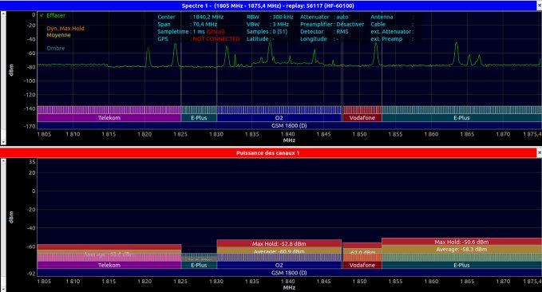

Déployer un système de transmission ou un réseau d'accès, fixe ou mobile.
Niveau 3- Ce que j'ai fait
- Sur cet AC, deux types d'expériences se complètent. Côté académique, la SAÉ 3.01 a porté sur la conception d'une chaîne de modulation HF avec GNU Radio Companion et un transceiver SDR ADALM-Pluto : modulations AM, FM, RDS, intégration de VLC pour le transport audio/vidéo. Côté professionnel, je participe depuis dix-huit mois à la coordination de chantiers de déploiement chez Grid Network, aménageur de sites de radiocommunication multi-opérateurs.
- Pourquoi
- La SAÉ 3.01 visait à matérialiser ce qu'est concrètement une chaîne de transmission. Côté Grid, l'ambition est différente : comprendre l'envers du décor du réseau mobile français, là où les opérateurs ne déploient pas eux-mêmes leurs antennes mais s'appuient sur des aménageurs comme Grid. Connaître ce maillon est précieux pour qui veut travailler dans le secteur télécom.
- Comment
- SAÉ 3.01 : graphe de modulation dans GNU Radio Companion, paramétrage des codecs H.264 et AAC, validation par analyse spectrale en bande GSM 1800. Chez Grid : analyse de l'APD, vérification des coordonnées et des contraintes terrain, rédaction du PPSPS, programmation des VIC, suivi de la réception du matériel radio (modules, antennes, baies).
- Mes difficultés
- Mes notes en physique du signal sont restées basses (R3.06 Fibres optiques 4,20 ; R4.02 Transmissions avancées 5,67 ; R4.03 Physique télécoms 7,25 ; R4.04 Réseaux cellulaires 5,75). Le formalisme mathématique des modulations et de la propagation guidée m'a coûté. C'est un déficit de socle mathématique préalable, lié à ma formation antérieure en sciences humaines.
- Ce que j'en ai appris
- Les notes faibles n'invalident pas la compréhension opérationnelle. Le 17,27 obtenu à mon stage Grid Network dans le même semestre que les notes faibles de physique le confirme : sur un chantier, ce qui compte c'est savoir lire un APD, identifier une non-conformité, communiquer avec le sous-traitant. C'est ce que je sais faire. L'expérience de terrain donne par ailleurs du sens aux abstractions des cours.
- Ce que je ferais autrement
- Reprendre les fondamentaux mathématiques (séries de Fourier, complexes en traitement du signal, probabilités) en autoformation parallèle avant de réattaquer la physique du signal. Travailler davantage avec des outils de simulation (Octave, Matlab) plutôt qu'avec le seul formalisme papier-crayon.
